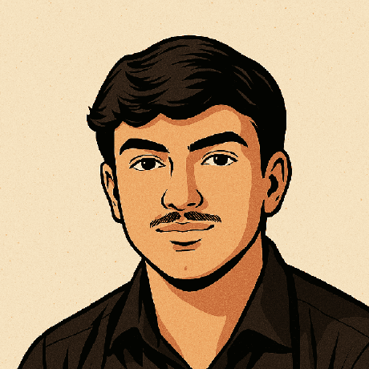

Desenvolvedor
Front End &
Back End
Marília - São Paulo

Marília - São Paulo
Sou um apaixonado por tecnologia de 22 anos que não limita essa paixão apenas aos códigos.
Atuei como estagiário no suporte técnico auxiliando lojistas na resolução de problemas na plataforma, analisando cada caso para identificar a causa raiz e propor soluções eficazes.
Realizei análise, testes e validação de APIs com Postman e SoapUI, focando em integrações com gateways de pagamento, logística e todos marketplaces da plataforma.
Atuação em demandas transversais com contato ativo com lojistas, apoio em integrações técnicas, análise de cenários e interface entre áreas como Onboarding, Customer Success, SAC e Suporte, contribuindo para a resolução de casos complexos e melhoria da eficiência operacional e da experiência do cliente.
Atuação técnica nas plataformas Tray e Bagy com testes e validações de APIs e WebServices, suporte a parceiros (ERPs, integradores e agências), homologação de integrações e temas, análise de cenários críticos via GitLab, Graylog e Grafana e colaboração com times de Desenvolvimento, Produto e Engenharia para melhoria contínua das integrações.
Sou formado em Ciência da Computação e aplico grande parte do meu conhecimento na Tray, contribuindo com soluções técnicas e suporte a integrações. Além disso, complemento minha formação com cursos e estudos contínuos, sempre buscando evolução profissional.